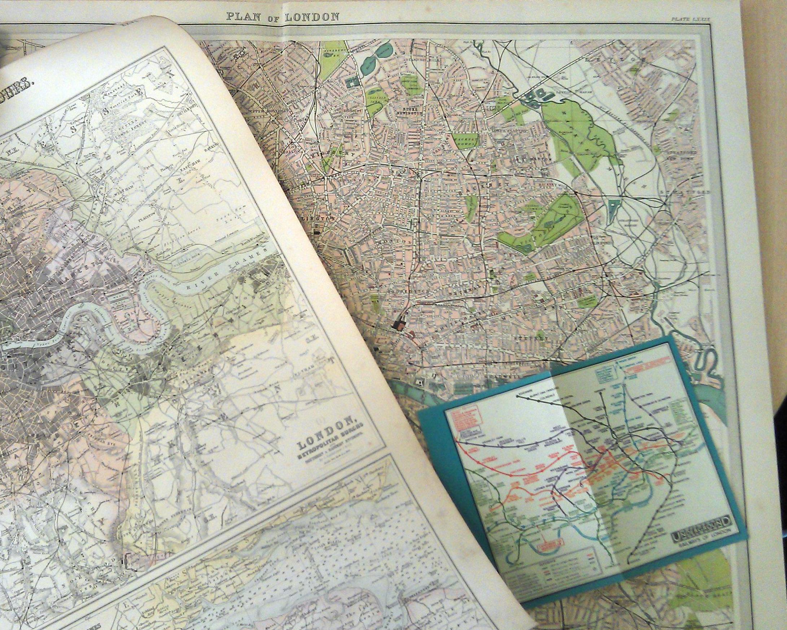
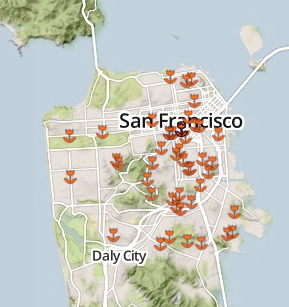
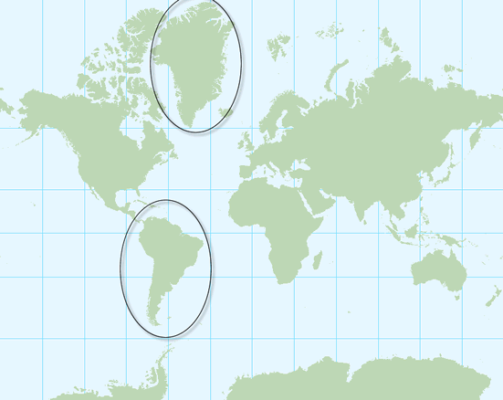
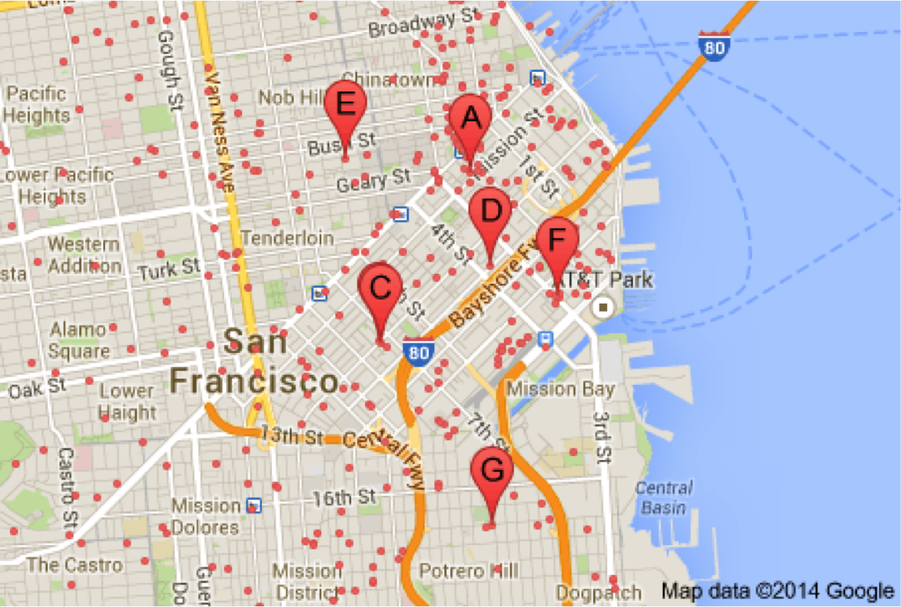

Web Mapping Quickstart
Welcome Back
Last week: Session 1
Web mapping platforms and projects
This week: Session 2
Web mapping from scratch
Why is it important to learn about web mapping from the browser up?
"Cartographers limit themselves – because of a lack of software skills or a client’s desired final product – to using
pre-fabricated tools for Web map design (e.g., Google Maps, Esri’s ArcGIS Online). By the time data-organization and design decisions are considered, the potential efficacy of the map’s communication is already
grossly constrained by the
limitations of the tool chosen." -
Ian Muehlenhaus in
Going Viral: The Look of Online Persuasive MapsBefore we start making web maps from scratch, some ontology:
There are print maps...
(maps on paper)
And there are digital maps...

(maps on computers)
And then there are web maps...

(maps on the internet)
Simple, right?
The simplest web map:
We're gonna make it.
CSS: Cascading style sheets
Rules can be defined- Interactively in the browser
- In a specific tag
- In a <style> tag in the <head>
- In a separate file
| |
Presto! You made a web map!
But we associate a little more functionality with web maps...
Starting with interactivity and animation.
Making an interactive web map can also be simple: just a little Javascript.
Example: the onclick function
An
animated web map can also be
simple: embed an
animated GIF.
| You've got this: |
 |
We'll talk next time about cartographic principles and web map design, but the takeaway from what we've done so far should be that web mapping doesn't have to be ugly or complicated.
"But wait," you're saying. "I thought the definition of a web map is a map that can pan and zoom!"
Well then, you've missed my point so far, but fine.
Remember the CartoDB and Mapbox Maps we made last week?
Here's how to embed them in a web page:
When read by a browser, those pages look like this:
Let's do it right now...
'K and what are we doing exactly?
(these URLs have a bunch of commands in them that are executed and your map is returned)
This is accomplished through an API: Application Programming Interface.
Most commonly, you send API specifications and it sends you back resources.
In the MapBox and CartoDB examples, the resource was a map.
That's a complicated resource actually (and there is a lot going on under the hood) and our theme today is web mapping from scratch.
...which is important because we don't want our cartography to be limited by the tool we choose.
|  |
| (In particular I hate how the point symbols overrun the place labels) |
So let's back up...
Forget about APIs for a few minutes, let's just talk about maps.

In particular,
slippy maps.
That's an industry term for maps that pan and zoom and run on tiles.
A bit of history and explanation...
(
Beth and
Alan
are the masterminds of
Maptime, a weekly study group for people interested in web mapping...
... which means you so yes, you should check it out)
Directions for driving! Online! Wow!
The problem: it was slow to load :(.
MapQuest required a full page refresh to scroll or zoom, and was always aligned to tile boundaries.
Then came Google Maps, which revolutionized everything, beginning in 2005.
But what was the revolution?
Was it the interface?
The red marker?
The weather widget?
No!
It was the
tile. 
Way back when (
1999-2006), most web maps were made using a protocol called
WMS (
Web Map Service), which is still widely in use today
The trouble is, the GIS software model is too slow and clunky for the web.
A
tile is just an
image file of type
PNG.
GIS folks: what is an image file that we use for data?
That's right, a raster!
Whatever the zoom, whatever the map, tiles are always the same size: 256x256 pixels.

The key is: all these little tiles load
way faster than one big map.
You just grab the ones you need to fit your screen plus a few extra along the top, bottom, left, and right.
Each zoom level has its own set of tiles!
 Zoom level 0: one tile for the world.
Zoom level 0: one tile for the world.With each additional zoom level, the number of tiles increases exponentially.
 Zoom level 1: 4 tiles for the world.
Zoom level 1: 4 tiles for the world. Zoom level 2, 3, 4, 5
Zoom level 2, 3, 4, 5 Zoom level 13
Zoom level 13Tiles are rendered in advance (usually) then stored in a cache.
Each map tile has a unique address!
Remember before about APIs? Keep those in mind, now look at THIS URL:
http://tile.openstreetmap.org/4/2/6.png -- this is the name of the tile server.
http://tile.openstreetmap.org/4/2/6.png -- this is the z value, or the zoom level.
http://tile.openstreetmap.org/4/2/6.png -- This is the x/y value, or the place in the grid for that zoom where the tile lives.
One key convention that differs between TMS and WMS is projection.
Tiled maps (typically) rely on Web Mercator.
That's nice because interoperability, which is an important concept in how the web should work...
It means whatever the map, whatever the zoom, a tile will have the same boundaries

Mercator projection means that latitude and longitude lines make perfect right angles...
...and Web Mercator means that these right angles form perfect squares...
which has kinda worked for people for a long time...
maybe too long
If you're a geographer you know that transforming the globe from an oblate spheroid to a flat map distorts the area of continents dramatically,
A talk for another time...
WMS can, by convention, use any projection. For a while was an argument for keeping it around...
But were' not talking about WMS any more today.
Please note: slippy maps have largely evolved to support reference mapping and in particular navigation. For thematic mapping they can sometimes be overkill.
| No zoom needed! |
| 
|
More on that next time!
Make sense?
Great!
Let's go on some tangents!
Tangent #1: Tiles are always rasters EXCEPT when they're not!
Raster: a prerendered image of your map data
Vector tiles: are an alternative way of storing the data that makes raster tiles. They still render to rasters for display.
Vector tiles: your map data sliced up in grid squares & stored as points, lines and polygons until the very last second!
Has some advantages over maintaining your cache of rasters...
Primarily: Easier to change styles dynamically, on the fly.
Secondarily: Storing data as vectors can save space. On the Internet, space = time.
Tangent #2: Can’t interact with features on a raster. BUT
UTFGrid (Mapbox invention) makes it possible.
Tilemill, which we will play with next time, uses this invention to add interactivity right into the tiles.
Tangent #3:
D3 exists outside the world of tiles
you can’t easily make road map in D3 BUT can do things that are clumsy in slippy maps like...

different map projections (in the browser!)
sta.mn/jfs
D3

IS

IN

SANE
Very powerful, but steep learning curve
Mashups: A type of mapping specific to the web that has evolved based on
slippy maps.
A mashup combines a basemap with a data layer.

It's always a slippy map
The data can come from a local file or an API
... but has come a long way
Data layers are vector layers (point, line, polygon). Sometimes you can interact with them (clicking to produce a popup, for example).
You'll recognize this: basemap + data
Filetypes: sometimes you can use
shapefiles, but
KML is more common, or more recently,
GeoJSONThere are now lots of APIs that support mashups
& there are Javascript libraries that support the common functions we need to integrate map tiles and other data.
What does a Javascript mapping library do?
Grabs the tiles, adds content layer, handles interaction.
 Time to make a simple mashup:
Time to make a simple mashup:Back to your text editors...
We'll go into this a bit more next time, but here's how it all fits together:
Presentation made with
big


 ...and much ink has been spilled over decades about the perceptual implications of using Mercator as your default projection...
...and much ink has been spilled over decades about the perceptual implications of using Mercator as your default projection... What are they? (unrelated demo)
What are they? (unrelated demo) choropleth maps or... sta.mn/jyx
choropleth maps or... sta.mn/jyx cartograms or... sta.mn/q99
cartograms or... sta.mn/q99